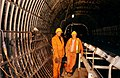
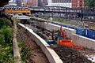
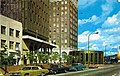
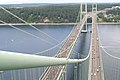

Bechtel Corporation
Bechtel Corporation es una empresa estadounidense de ingeniería , adquisiciones , construcción y gestión de proyectos fundada en San Francisco , California , y con sede en Reston , Virginia. A partir de 2022 , Engineering News-Record clasificó a Bechtel como la segunda empresa de construcción más grande de los Estados Unidos.
Fundacion y primeros años
Las actividades comerciales de Bechtel comenzaron en 1898, cuando el ganadero Warren A. Bechtel se mudó de Peabody, Kansas , al territorio de Oklahoma para construir ferrocarriles con su equipo de mulas . Bechtel mudó a su familia con frecuencia entre sitios de construcción en el oeste de los Estados Unidos durante los siguientes años, y finalmente se mudó a Oakland, California , en 1904, donde trabajó como superintendente en el Ferrocarril del Pacífico Occidental . En 1906, WA Bechtel ganó su primer subcontrato para construir parte de la sección Oroville-to-Oakland del Ferrocarril del Pacífico Occidental. Ese año compró una pala mecánica , convirtiéndose en un pionero de la nueva tecnología. Pintó "WA Bechtel Co." del lado de la pala mecánica, estableciendo efectivamente a Bechtel como una empresa, aunque aún no se había incorporado. Bechtel completó el trabajo en una serie de contratos ferroviarios a principios del siglo XX, que culminó con una extensión del Ferrocarril del Pacífico Noroeste que terminó en 1914
Comenzando con la construcción de la autopista del río Klamath en California en 1919, Bechtel se aventuró en trabajos distintos a la construcción de vías férreas. La empresa construyó carreteras, puentes y carreteras en todo el oeste de los Estados Unidos . La compañía trabajó en sus primeros proyectos hidroeléctricos en la década de 1920 para Pacific Gas and Electric Company en California .
En 1925, Warren, sus hijos Warren Jr, Stephen , Kenneth (Ken) y su hermano Arthur (Art) se unieron a él para incorporarse como WA Bechtel Company , que en ese momento era la empresa de construcción líder en el oeste de los Estados Unidos . . En 1929, el hijo de Warren, Stephen, instó a su padre a embarcarse en el primer proyecto de tubería de la empresa. Bechtel comenzó a trabajar con California Standard Oil Company para construir oleoductos y refinerías.
En enero de 1931, Bechtel se unió a otros contratistas en el oeste para formar Six Companies, Inc. , un consorcio creado para ofertar por un contrato del gobierno de EE . UU. para construir la presa Hoover . Six Companies ganó la licitación en marzo y la construcción comenzó en el verano de 1931.
Era de los megaproyectos
Stephen D. Bechtel Jr. reemplazó a su padre como presidente de la empresa cuando Stephen Bechtel Sr. se jubiló en 1960. Durante las décadas de 1960 y 1970, Bechtel participó en la construcción del 40% de la central nuclear. plantas en los Estados Unidos. En 1968, la compañía completó la planta nuclear más grande de los EE. UU. en ese momento, la Estación de Generación Nuclear de San Onofre , en California. En 1972, Bechtel participó en aproximadamente el 20% de toda la nueva capacidad de generación de energía de los Estados Unidos. A finales de la década, la empresa había pasado de la construcción de energía nuclear a proyectos de limpieza nuclear, incluido Three Mile Island .en 1979.
Bechtel completó el trabajo en otros megaproyectos durante la década de 1970, incluidos los principales aeropuertos de Arabia Saudita y el metro de Washington, DC En 1976, la empresa comenzó a trabajar en la ciudad industrial de Jubail en Arabia Saudita. Los múltiples contratos de construcción de la empresa ayudaron a transformar el área de un pequeño pueblo a una ciudad con una población de más de un cuarto de millón de personas.
En la década de 1980, Bechtel manejó la gestión del proyecto de
los Juegos Olímpicos de Verano de Los Ángeles de 1984 . La empresa
también construyó la Autopista Ankara-Gerede en Turquía como parte
de la red de carreteras que une Europa y Asia en 1986.
En 1987, Bechtel obtuvo un contrato de servicios de gestión de
proyectos de un túnel submarino que une el Reino Unido y Francia
llamado Channel Tunnel o "Chunnel". El túnel se completó en 1994.
| Nombre | Imagen | Descripcion |
|---|---|---|
| Túnel/Arteria Central de Boston |

|
Sección de la Interestatal 93 que atraviesa el centro de Boston, Massachusetts . Bechtel y Parsons Brinckerhoff supervisaron conjuntamente la planificación y construcción que redirigió y reconstruyó la Arteria Central de una carretera elevada a una serie de túneles. La planificación comenzó en 1982 y la construcción duró desde 1991 hasta 2006, aproximadamente diez años más de lo previsto inicialmente. También conocido como " Big Dig ", el proyecto incluía la construcción del puente conmemorativo Leonard P. Zakim Bunker Hill , el puente atirantado más ancho del mundo, y un túnel submarino que atraviesa elPuerto de Boston y conecta el centro de Boston con el Aeropuerto Internacional Logan . El megaproyecto fue considerado el proyecto vial más complejo y costoso en la historia de los Estados Unidos. |
| Túnel del Canal (Channel) |  | Túnel submarino de 32 millas que conecta el Reino Unido y Francia considerado por la Sociedad Estadounidense de Ingenieros Civiles como una de las "Siete Maravillas del Mundo Moderno" . [222] Bechtel fue elegida para administrar el proyecto por Eurotunnel en 1987. La construcción duró de 1988 a 1994. |
| travesaño |  | Tren de cercanías que une el aeropuerto de Heathrow con el centro de Londres y proporciona conexiones con la ciudad y los suburbios. Bechtel es parte de un equipo de empresas que supervisan la construcción. El desarrollo comenzó en 2009 y la excavación del túnel se completó en 2015. Crossrail es el proyecto de infraestructura más grande de Europa y sirve a aproximadamente 1,5 millones de personas. |
| Tránsito Rápido del Área de la Bahía (BART) |  | Sistema de transporte público para el Área de la Bahía de San Francisco . Bechtel diseñó, diseñó y construyó BART para el Distrito de Tránsito Rápido del Área de la Bahía a través de una empresa conjunta llamada Parsons-Brinkerhoff-Tudor-Bechtel. La construcción comenzó en 1964 y se completó en 1976. |
| Sistema de generación eléctrica solar Ivanpah | Planta termosolar ubicada en el desierto de Mojave en California . La planta fue desarrollada y diseñada por BrightSource Energy , que contrató a Bechtel para construir la planta entre 2009 y 2014. Bechtel también fue inversionista en el proyecto. Ivanpah usa espejos generadores de calor que crean vapor, alimentando turbinas que producen electricidad. Es la granja solar en funcionamiento más grande del mundo. | |
| Sabine Pass GNL | Instalación de seis trenes de GNL actualmente en desarrollo y una planta de regasificación en Sabine Pass en Louisiana . Bechtel está trabajando en el proyecto para Cheniere Energy Partners. Entre 2005 y 2009, Bechtel construyó la terminal de regasificación. A partir de 2016, los trenes 1 y 2 están completos y los otros trenes se encuentran en diferentes niveles de construcción. | |
| Rumanía Autopista A3 | Esta es una de las carreteras más caras del mundo. Bechtel abandonó el proyecto después de que solo construyera 54 km de los 400 km previstos de la Autopista de Transilvania, por 1.250 millones de euros. | |
| Restauración del campo petrolero de Kuwait | Después de la Guerra del Golfo , se contrató a Bechtel para dirigir un equipo para restaurar los campos petroleros dañados por las fuerzas iraquíes, incluida la reparación de 749 pozos, de los cuales 650 estaban en llamas. Bechtel completó la tarea en ocho meses y por debajo del presupuesto. | |
| Puente estrecho de Tacoma |  | Puente colgante que cruza Puget Sound en Tacoma, Washington . El actual puente Tacoma Narrows se inauguró en 1950 después de que el original se derrumbara en 1940. El Departamento de Transporte del Estado de Washington seleccionó a Bechtel con Peter Kiewit and Sons para construir un segundo puente paralelo para acomodar el aumento del tráfico. La construcción comenzó en 2002 y se completó en 2007. Fue el puente estadounidense más grande construido desde el puente Verrazano-Narrows en 1964. |
| Presa Hoover | Damupstream.jpg Presa de arcogravedad en el Cañón Negro del río Colorado encargada por la Oficina de Reclamación para controlar las inundaciones y proporcionar agua y energía hidroeléctrica al suroeste de los Estados Unidos y California. En el momento de la construcción, era la represa más grande del mundo y el proyecto de obras públicas más grande en la historia de los EE . UU . Bechtel hizo una oferta en el proyecto como parte de Six Companies, Inc. , un grupo de varios contratistas más pequeños. Bechtel dirigió la construcción desde 1931 hasta megaproyecto de Bechtel . | |
| Planta de inmovilización y tratamiento de residuos de Hanford | Planta de vitrificación para procesar desechos radiactivos en el sitio de Hanford en Washington en una forma estable que pueda eliminarse de manera segura. Bechtel fue seleccionado por el Departamento de Energía de los Estados Unidos para liderar el equipo de diseño, construcción y puesta en marcha de la planta, que se espera que sea la más grande de su tipo. El trabajo comenzó en 2001, pero el proyecto tuvo retrasos significativos debido a problemas técnicos y problemas de diseño. En enero de 2021 se completó una nueva planta para procesar residuos de "baja actividad". | |
| Metro de Riad | Sistema de tránsito rápido en construcción en Riyadh, Arabia Saudita . Bechtel fue contratada en 2013 para encabezar un consorcio para desarrollar seis líneas, incluidos todos los túneles y estaciones. En 2016, Bechtel afirmó que es el proyecto de ingeniería civil más grande que ha emprendido la empresa en su historia. [188] [242] Está previsto que las primeras líneas del Metro de Riad comiencen a funcionar en el último trimestre de 2021. | |
| Metro de Atenas | Sistema de tránsito rápido en Atenas , Grecia . Bechtel lideró un consorcio que construyó dos nuevas líneas, incluidas 17 millas de expansión ferroviaria y dos estaciones antes de los Juegos Olímpicos de Verano de 2004 . La compañía también trabajó con el Ministerio de Cultura y Deportes de Grecia para asegurar que se preservaran los artefactos arqueológicos desenterrados . Se estima que el sistema redujo el tráfico entre 200.000 y 375.000 automóviles. | |
| Laboratorio Nacional de Los Álamos , Laboratorio Nacional Lawrence Livermore | Instalaciones de investigación de EE. UU. que se centran en las armas nucleares y la seguridad nacional. Bechtel ha administrado ambos laboratorios en una empresa conjunta con la Universidad de California y otras organizaciones desde 2006 bajo contratos con el Departamento de Energía. | |
| Isla Curtis GNL | Tres plantas de gas natural licuado en Curtis Island en Queensland, Australia . Se contrató a Bechtel para diseñar y construir los GNL para tres empresas conjuntas separadas. Una vez finalizados, los trenes producirán el 8% de toda la producción de GNL. | |
| Infraestructura Nacional de Gabón | Plan maestro para el desarrollo de infraestructuras en Gabón . Llamado "Le Gabon Emergent", el plan fue creado por Bechtel y el presidente Ali Bongo Ondimba en 2010. Su objetivo es invertir $ 25 mil millones en nueva infraestructura para 2025. Bechtel estableció la Agencia Nacional de Infraestructura del país y está supervisando todos los proyectos de obras públicas en el país hasta 2016, incluso en las áreas de educación, vivienda y transporte. | |
| Finalización de la estación de generación nuclear Watts Bar | Planta de energía nuclear en Tennessee compuesta por dos reactores utilizados para la generación de energía eléctrica. En 2007, la Autoridad del Valle de Tennessee eligió a Bechtel para completar la segunda unidad, cuya construcción se detuvo en 1985. La Unidad 2 de Watts Bar se completó en 2015. Fue el primer reactor nuclear que entró en funcionamiento en los Estados Unidos desde 1996. | |
| Estabilización de refugios de Chernobyl y nuevo confinamiento seguro | Estructura para confinar la Central Nuclear de Chernóbil en Ucrania , que explotó en 1986 en el peor accidente nuclear de la historia. El confinamiento está diseñado para durar 100 años y reemplaza el " sarcófago " original erigido para contener la radiación tras el desastre de Chernóbil . Bechtel comenzó las reparaciones en 1998 y formó parte del equipo que supervisó la construcción del arco, que se instaló sobre la Unidad 4 del reactor en noviembre de 2016. | |
| Ciudad industrial de Jubail | La ciudad industrial más grande de Medio Oriente y el proyecto de ingeniería de construcción más grande del mundo. Bechtel ha estado supervisando la construcción desde el inicio del proyecto a mediados de la década de 1970. La ciudad se construyó a partir de un plan maestro diseñado por Bechtel y abarca la infraestructura para respaldar 19 industrias primarias y producir productos a base de petróleo y gas, incluidos petróleo refinado, productos petroquímicos, acero, vidrio y aluminio. Bechtel también ha construido viviendas, locales comerciales, mezquitas , escuelas, clínicas y estaciones de bomberos. Bechtel comenzó la construcción de una expansión a la ciudad, llamada Jubail Industrial City II, en 2006. | |
| Alta velocidad 1 | Ferrocarril de alta velocidad que conecta Londres con el Channel Tunnel. Originalmente llamado Channel Tunnel Rail Link (CTRL), Bechtel dirigió el consorcio de empresas London and Continental Railways en el diseño, la gestión del proyecto y la construcción del ferrocarril, incluida la renovación de la estación de tren de St Pancras . El grupo fue seleccionado por el gobierno del Reino Unido en 1996 y la construcción se completó en 2007. High Speed se considera la "primera línea ferroviaria verdaderamente de alta velocidad del Reino Unido". |